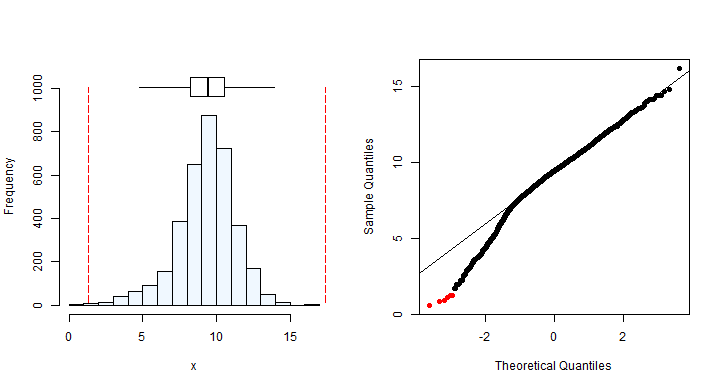
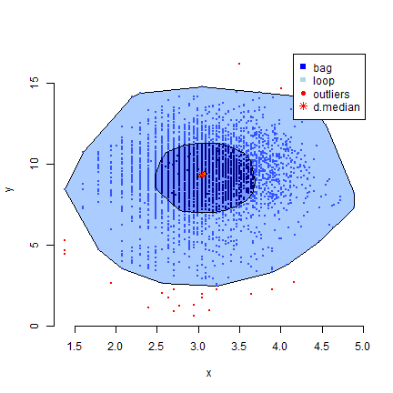
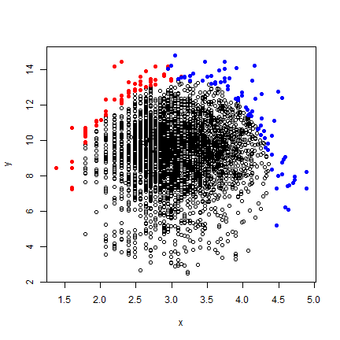
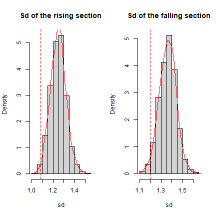
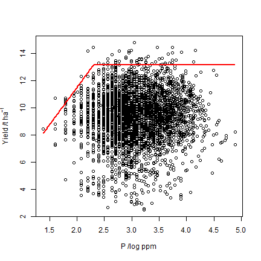

Workflow for Miti et al. (in prep.)¶
Chawezi Miti, University of Nottingham
Introduction¶
The censored bivariate normal model (Lark and Milne, 2016) is a statistical method of fitting the boundary line. It fits the boundary line using the maximum likelihood approach on a censored bivariate distribution. This removes the subjectivity of selecting boundary points to which the boundary line is fitted. It also gives evidence for presence of a boundary in the data set. This method has been previously used to fit boundary lines to data on nitrous oxide emission as a function of soil moisture (Lark and Milne, 2016) and, Wheat yield as a function of Nutrient concentration (Lark et al., 2020). An R package, called ‘BLA’, contains exploratory and boundary line fitting functions that can be used in the process of fitting a boundary line to data using the censored bivariate normal model. This workflow provides a step by step process for fitting the boundary line with this approach.
Installation of BLA package¶
Below, we need install the R packages required to run this workflow.
# problem with this package, install from source
install.packages('https://cran.r-project.org/src/contrib/aplpack_1.3.5.tar.gz', repos=NULL, type="source", quiet=T)
library(aplpack)
#
# package names
packages <- c("MASS", "mvtnorm")
#
# install packages
installed_packages <- packages %in% rownames(installed.packages())
if(any(installed_packages == FALSE)){
install.packages(packages[!installed_packages], repos="http://cran.us.r-project.org", quiet=T)}
#
# load packages
invisible(lapply(packages, function(x) suppressMessages(require(x, character.only=T, quietly=T, warn.conflicts=F))))
You also need to install the ‘BLA’ package (under development) from GitHub:
file <- 'https://raw.githubusercontent.com/jvasco323/eia-yg-training-ppt/master/BLA_1.0.6.zip'
install.packages(file, repos=NULL)
## Installing package into 'C:/Users/JSILVA/AppData/Local/R/win-library/4.3'
## (as 'lib' is unspecified)
## package 'BLA' successfully unpacked and MD5 sums checked
library(BLA)
Load data set¶
The data set used for this illustration in this workflow consists of wheat yield and soil phosphorus data. Boundary line analysis was applied this data set in a previous study by Lark et al., (2020).
The data can be loaded into R software using the chunk of code below:
file <- 'https://raw.githubusercontent.com/jvasco323/eia-yg-training-ppt/master/my_data_trimed.csv'
data <- read.csv(url(file), header=TRUE)
head(data)
## yield.t.ha. Phosphorus_ppm
## 1 9.55787 10
## 2 8.88999 9
## 3 11.88140 12
## 4 10.35740 10
## 5 12.62530 14
## 6 11.64170 11
We wish to fit a boundary line to wheat yield data as function of soil phosphorus concentration.
Data exploration¶
Exploratory analysis is an essential initial step in fitting a boundary line to data. This step ensures that the assumptions for the censored bivariate normal model are met. Three exploratory procedures are performed on the data which include (1) testing for normality of variables, (2) removal of outliers, and (3) testing for evidence of boundary in the data.
1. Testing for normality of independent and dependent variable
Boundary line model fitting using cbvn requires that the independent (x) and dependent (y) variables are normally distributed. The summa() function gives indices of the distribution of a variable. A variable is assumed to be normally distributed if the skewness index is between -1 and 1. The summaplot() function provides a visual description of the data distribution.
x <- data$Phosphorus_ppm
y <- data$yield.t.ha.
#
summaplot(x) # histogram and qqplot for distribution of x
summa(x) # gives indices for skewness; the skewness is 1.84 which is outside the normal distribution range of -1 to 1: data transformation is thus required
## Mean Median Quartile.1 Quartile.3 Variance SD Skewness
## [1,] 25.22307 21 15 31 203.4532 14.2637 1.786871
## Octile skewness Kurtosis No. outliers
## [1,] 0.3793103 5.303787 22
summa(log(x))
## Mean Median Quartile.1 Quartile.3 Variance SD Skewness
## [1,] 3.091277 3.044522 2.70805 3.433987 0.2681185 0.5178016 0.1260458
## Octile skewness Kurtosis No. outliers
## [1,] 0.08906724 -0.1011968 0
summaplot(log(x))
#
# distribution of the y variable
summa(y) # gives indices for skewness; the skewness is -0.48 which is within the normal distribution range of -1 to 1
## Mean Median Quartile.1 Quartile.3 Variance SD Skewness
## [1,] 9.290768 9.45873 8.231085 10.5264 3.820238 1.954543 -0.6748272
## Octile skewness Kurtosis No. outliers
## [1,] -0.07020916 1.306502 6
summaplot(y) # histogram and qqplot for distribution of y

2. Removal of outliers
Boundary line analysis is sensitive to outlying values and hence it is required that they are identified and excluded prior to fitting a boundary line. A bag plot (a bivariate box plot) is used to identify outliers. The bag plot has four main components: (1) a depth median (equivalent to the median in a boxplot) which represents the center of the data set, (2) the bag which contains 50% of the data points (equiavalent to the interquartile range), (3) a ‘fence’ that separates probable outliers, and (4) a loop which contains points outside the bag which are not outliers.
x <- log(x) # since we requred a transformation
df <- data.frame(x,y)
bag <- bagplot(df,show.whiskers = FALSE)
legend("topright", c("bag","loop","outliers", "d.median"),
pch = c(15,15,16,8),col=c("blue","lightblue","red","red"))

#
# combine data points from "bag" and within the loop
dat <- rbind(bag$pxy.bag,bag$pxy.outer)
#
# output is a matrix, we can pull out x and y variables for next stage
x <- dat[,1]
y <- dat[,2]
3. Testing data for presence of boundary
It is important to note that not all data are suitable for boundary line analysis. Data used in boundary line analysis should exhibit some form of boundary on its edges (to satisfy the assumption that this is an actual response when other factors are not limiting). If a boundary exists in a data set, it is expected that points at the upper edges of the data cloud will be close to each other compared to a bivariate normally distributed data for which data points at the upper edges are only due to random error. A boundary can be assumed in a data set if there is evidence of clustering at the upper edges. The expl.boundary() function, which is based on the convex hull, can be used to access presence of boundary (Milne et al., 2006). This function checks probability of the observed clustering if it came from a bivariate normal distribution (p-value).
expl.boundary(x,y) # may take about 2 minutes to complete

## Index Section value
## 1 sd Rise 1.082113
## 2 sd Fall 1.195613
## 3 Mean sd Rise 1.243657
## 4 Mean sd Fall 1.355574
## 5 p_value Rise 0.010000
## 6 p_value Fall 0.018000
From the results, the probability (p-value) of the having observations close to each other in our data, assuming it follows a bivariate normal distribution, is less than 5%. Therefore, there is evidence of bounding effects in the data. Note that, in the plot, the data is split into right and left sections to get more information on the clustering nature of points.
Fitting the boundary line¶
The exploratory tests previously conducted provide evidence of a boundary in the data set, given that outliers were identified and excluded, and the variables x and y are normally distributed. We therefore, proceed to fit a boundary line model to the data set using the censored bivariate normal model. The cbvn() function fits the boundary line to the data. For more information about the arguments of this function, check:
?cbvn
Argument values for the function cbvn() need to be set. First, let’s create a data-frame containing x and y:
vals <- data.frame(x,y) # this is an input dataframe containing the variables
Secondly, the cbvn() function requires initial starting values, theta, which are parameters of the boundary line (the censor) and the bivariate normal distribution. Starting values of the boundary line depend on the model that one wishes to fit to the data (see options in ?cbvn). In this case, we shall fit a linear plateau model (‘lp’) and hence the parameters are the plateau value and the intercept and slope of the linear component. The boundary line start values can be obtained using the function startValues(). With a scatter plot of y against x active in the plot window in R, run the function start.values(2), then click on the plot, the point you expect to be the lowest and the largest response of a linear model at the boundary.
# note this step will only work in R or Rstudio
plot(x,y)
startValues(n=2)
Parameters of the bivariate normal distribution include the means of the x and y variables, standard deviation of the x and y variables, and the correlation of x and y.
# required parameters
mean(x)
## [1] 3.092809
mean(y)
## [1] 9.324846
sd(x)
## [1] 0.5153963
sd(y)
## [1] 1.882962
cor(x,y)
## [1] 0.04729519
#
# the parameters of the boundary line and the data can be combined in a vector theta
theta <- c(13.6, 4, 3, 3.13, 9.29, 0.5, 1.73, 0.03)
Another important argument is the standard deviation of the measurement error, sigh. This value can be obtained from standard deviation of repeated measurements of the sample if this is possible. However, in cases when this is not available, it can be estimated from the data. One option of estimation is to use a variogram if the location data (xy coordinates) is available. In this case, nugget variance which is the unexplained short distance variations can be taken as an estimate of the measurement error. The variogram below was obtained in the study for which the data used in this example is based.

From the variogram, the nugget variance was found to be 0.435.
sigh <- sqrt(0.435) # standard deviation of the measurement error 0.66
All arguments are now set, the cbvn() can be fitted:
model1 <- cbvn(vals,theta,sigh,model = "lp", xlab=expression("P /log ppm"), ylab=expression("Yield /t ha"^{-1}))
## Warning in sqrt(diag(covpar)): NaNs produced

model1
## $estimates
## Estimate Standard error
## beta0 13.13820654 0.165731302
## beta1 0.51414702 0.100312067
## beta2 5.48249907 NaN
## mux 3.09278135 0.008601939
## muy 9.33714255 0.032071625
## sdx 0.51532725 0.006082414
## sdy 1.78781765 0.025362137
## rcorr 0.04415286 0.017695779
##
## $AIC
##
## constant max 20157.10
## mvn 20155.10
## BL 20139.98
Is the boundary line ideal for this data?
While fitting the BL model to the data, the cbvn() also fits a model with a constant boundary alone and also multivariate normal models with no boundary. From our output, the AIC value of the boundary line model is lower than that of the constant maximum and multivariate normal models. Therefore, the boundary line model is appropriate for this data set.
The parameters of the boundary line are obtained and hence can be used to predict the boundary yield for any given value of soil phosphorous, as per the chunk of code below.
yield_pred <- vector()
for(i in 1:length(data$P)){
yield_pred[i] <- min(model1$estimates[2,1]+ model1$estimates[3,1]*log(data$P[i]), model1$estimates[1,1])}
data$yield_pred <- yield_pred
head(data)
## yield.t.ha. Phosphorus_ppm yield_pred
## 1 9.55787 10 13.13807
## 2 8.88999 9 12.56043
## 3 11.88140 12 13.13821
## 4 10.35740 10 13.13807
## 5 12.62530 14 13.13821
## 6 11.64170 11 13.13821